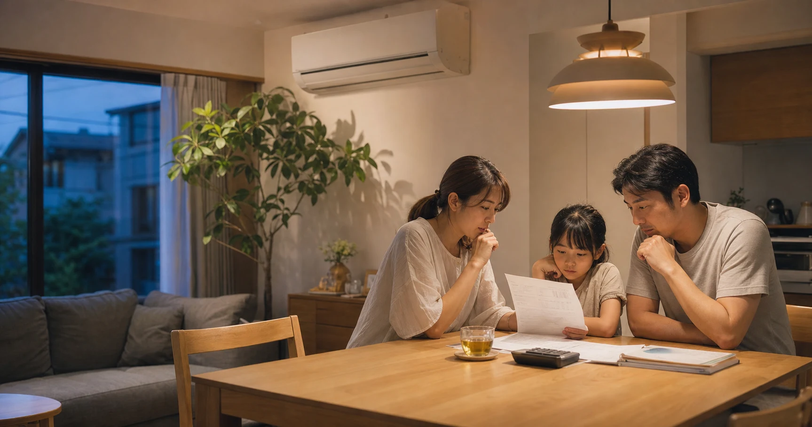
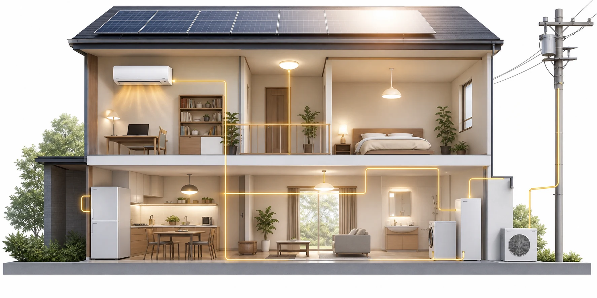
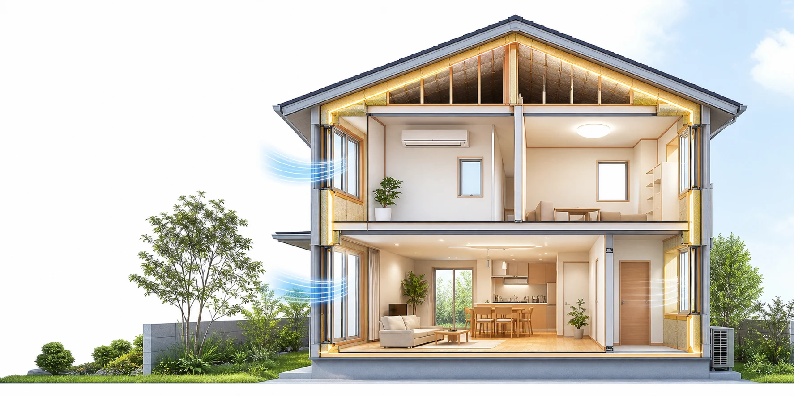
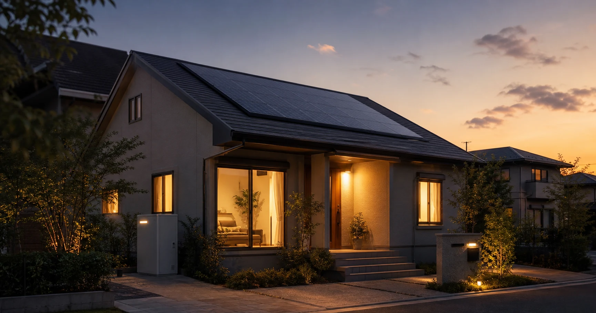

ホーム › コラム - ちょっと深い住まいの話 › 第8回

8月、猛暑のなかで届く電気代の請求書にため息をついた方も多いのではないでしょうか。「毎年のように『電力不足』『節電を』と言われている気がする」――最近は「原因はAIだ」という話をよく耳にしますが、電気代の上昇はAIが騒がれるずっと前から続いてきました。まず"なぜ毎年上がるのか"を整理したうえで、家庭で一番効く節電を、データでみっちりお話しします。第6回の、節約に特化した実践編です。
この記事のポイント
電気代が上がり続ける理由はAIだけではない。震災以降の"積み重ね"の上にAIが乗っている。
家庭の節電で、一番の急所は「窓」。冬は約58%、夏は約73%の熱が窓から出入りする。
古い家電は消費電力量が大きくなりやすい。買い替え時は年間消費電力量を比べる。
"つけっぱなし"は、いつも得とは限らない。短時間の外出はつけっぱなし、長時間は消す。
子ども・高齢者のいる家は我慢が禁物。断熱で"燃費"を上げ、賢く使うのが正解。
1. なぜ電気代は「毎年」上がるのか――AIだけではない
出発点は2011年の東日本大震災。原発が止まり、火力発電への依存と燃料輸入への依存が強まりました。「再エネ賦課金」も年々増加。2022年のウクライナ情勢で燃料価格が急騰し、日本の化石燃料の輸入額は2年間で22兆円以上増えたとされます。そこへ新たに加わったのがAIとデータセンター。国際エネルギー機関（IEA）の報告『Energy and AI』は、AI向けデータセンターの電力消費が2030年までに大きく膨らむと予測しています。経済産業省は2026年夏に首都圏などで節電要請が必要な水準まで需給が逼迫する見通しを示しました。

2. 一番の急所は「窓」――熱の"逃げ道"を知る
住宅で冷暖房した熱は、冬の暖房時に約58%、夏の冷房時には約73%が窓から出入りしています。断熱・気密は冬だけの対策ではなく、年間を通じて冷暖房効率を高める基本です。夏はさらに、すだれや外付けブラインドで日射を窓の外側から遮ります。厚手の断熱カーテンといった身近な工夫から、内窓や、特殊な金属膜で熱の出入りを抑えるLow-E複層ガラスの本格リフォームまで、段階を踏むのがムダのない進め方です。

3. エアコン――古い機種は、10年・20年でこんなに違う
古い機種ほど消費電力が大きくなる傾向があります。買い替えを考えるときは、本体価格だけでなく、年間消費電力量と電気料金の目安を比べましょう。10年以上使っているエアコンなら、故障する前に省エネ性能を確認しておくと安心です。
4. エアコン「つけっぱなし」の正解
夏の冷房は、日中の短時間の外出（30分程度）ならつけっぱなしのほうが得。長時間の外出や夜は消すほうが得です。時間帯と外出の長さで判断するのが正解です。
5. エアコンだけじゃない――冷蔵庫・照明・待機電力
冷蔵庫は20年前のモデルが最新型のおよそ2倍の電力を消費するという試算があります。照明のLED化にも節約効果が見込めます。使っていない家電の待機電力も積み重なります。節電は「我慢」ではなく、古いものを効率のよいものへ「置き換え」でできることが多いのです。

6. 子育て・高齢者世帯へ――我慢せず、賢く
熱中症の発生場所として多いのは「住居」です（第6回）。電気代を気にして冷房を我慢しては本末転倒です。①窓を断熱して"入ってくる熱"を減らし②古い家電を効率のよいものへ置き換える。この二段構えなら、快適さと節約は両立します。
よくある質問
電気代が上がるのは、AIのせいですか？
＋
AIは新しい要因の一つですが、それだけではありません。震災以降の火力発電・燃料輸入への依存、再エネ賦課金、燃料高騰と円安といった"積み重ね"が土台にあります。
節電で、一番効くのは何ですか？
＋
まず「窓」です。冷暖房した熱は冬に約58%、夏に約73%が窓から出入りします。窓を断熱すると冷暖房の効率が上がり、電気代そのものが下がります。
古い家電は、買い替えたほうが得ですか？
＋
使用頻度が高く、10年以上前の機種なら検討の価値があります。機種ごとに年間消費電力量と電気料金の目安を比べ、購入費用も含めて判断しましょう。
エアコンはつけっぱなしと、こまめに消すの、どちらが得ですか？
＋
短時間の外出はつけっぱなし、長時間は消す、夜はこまめに、が基本です。時間帯と外出の長さで使い分けてください。
子どもや高齢者がいます。節約と健康、どう両立しますか？
＋
我慢は禁物です。エアコンは賢く使い、窓の断熱で入ってくる熱を減らすのが正解。省エネと安全は、断熱でこそ両立します。
この記事のまとめ
電気代が"毎年"上がるのはAIだけが理由ではなく、震災以降の構造的な積み重ねの上にAI需要が加わっています。一番の急所は「窓」で、熱は冬に約58%、夏に約73%が出入りします。古い家電の置き換えも効果大。子育て・高齢者世帯は我慢せず、断熱で"燃費"を上げて賢く使う。節電は「我慢」ではなく「置き換え」でできるのです。
出典・参考資料を見る
資源エネルギー庁「電気料金の仕組み・燃料価格の影響」（2026年参照）
国際エネルギー機関（IEA）特別報告書『Energy and AI』（2025年）
経済産業省「今後の供給力確保について」（2026年）
一般社団法人日本建材・住宅設備産業協会「省エネ建材等級表示・窓の熱の出入り」（2026年参照）
環境省「家庭向け省エネ関連情報：機器の買換で省エネ・節約」（2026年参照）
資源エネルギー庁「省エネポータルサイト：家庭向け省エネ情報」（2026年参照）
この記事を書いた人｜エイスケ
1986年生まれ、40歳。実家の建築業・不動産に10年間従事したのち、教育の世界へ。住宅と教育、両方のプロの視点から「豊かな暮らし」をテーマに忖度なく切り込みます。※本コラムは筆者個人の見解・経験に基づくものです。最終的な判断は各分野の専門家にご相談ください。
← 前の回 目次に戻る 次の回 →